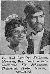

Siv Inger Maria Johansson
Småskollärare.
| Far: | Henfrid Alfonso Johansson (1896 - 1978) |
|---|
| Mor: | Ingrid Maria Hällgren (1913 - 1999) |
|---|
| Född: | 1946-04-04 Böle 4:59, Sunnanå, Skellefteå lfs, Skellefteå sn. [1] |
|---|
| Vigsel: | 1970-07-18 Umeå, Ålidhems fs, Umeå kn. [2] |
|---|
| Levde: | 1991 Bärnstensvägen 55, Umeå, Ålidhems fs, Umeå kn. [2] |
|---|
Noteringar
Tre barn har fostrats i familjen.
Personhistoria
| Årtal | Ålder | Händelse |
|---|
| 1946 |
|
Födelse 1946-04-04 Böle 4:59, Sunnanå, Skellefteå lfs, Skellefteå sn [1] |
| 1946 |
5 mån |
Maken "Love" Lars-Ove Gunnar Eriksson föds 1946-09-29 Myrberg 1:15, Bastruträsk, Bastuträsk kbfd, Norsjö sn [1] |
| 1970 |
24 år |
Vigsel "Love" Lars-Ove Gunnar Eriksson 1970-07-18 Umeå, Ålidhems fs, Umeå kn [2] |
| 1978 |
32 år |
Fadern Henfrid Alfonso Johansson dör 1978-07-02 Björkg 8, Skellefteå, Skellefteå lfs, Skellefteå kn [3] |
| 1991 |
|
Levde "Love" Lars-Ove Gunnar Eriksson 1991 Bärnstensvägen 55, Umeå, Ålidhems fs, Umeå kn [2] |
| 1999 |
53 år |
Modern Ingrid Maria Hällgren dör 1999-10-22 Norrböleg 35 A, Skellefteå, Sankt Olovs fs, Skellefteå kn [4] |
| 2012 |
66 år |
Maken "Love" Lars-Ove Gunnar Eriksson dör 2012-05-10 Bärnstensvägen 55, Umeå, Ålidhems fs, Umeå kn [5] |
Källor
| [1] | Mtl Sveriges befolkning 1950 |
| |
| | |
| [2] | Mantalslängd 1991, Västerbottens län |
| |
| | |
| [3] | RTB 78 / SPAR 80 |
| |
| | |
| [4] | RTB 99 |
| |
| | |
| [5] | FK 13 / man91 |
| |
|
|  |
1970-07-22. Fil stud Lars-Ove Eriksson, Nyrberg, Bastuträsk, o. småskollärere Siv Johansson, Skellefteå.
Vigselfoto i Norra Västerbotten
|
|
{kind=link}